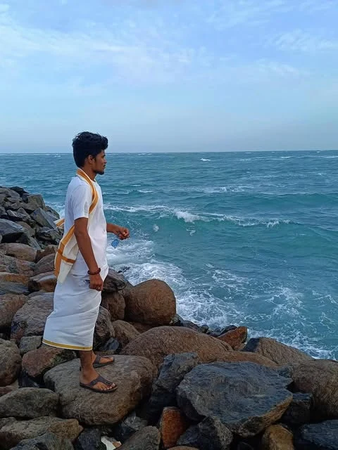

THE PHOTO JOURNAL / INSTAGRAM
Small moments.
A bigger story.
A little travel. A little adventure. A collection of the people, places, and in-between moments that make life feel like mine.

@amansinghsuneo4447__Aman Singh Suneo
Selected from my journal
Postcards from my world.
Personal favourites. Open any photo to see the original post.
Direct from Instagram
The Instagram
window.
Load my official profile panel to see what Instagram is showing now. New posts and profile changes are supplied by Instagram—not copied into this website.
Open Instagram · all posts & reels ↗There’s more to explore